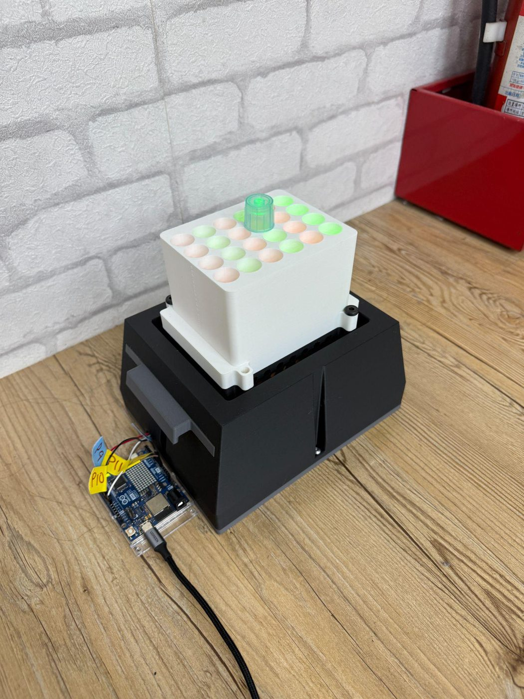
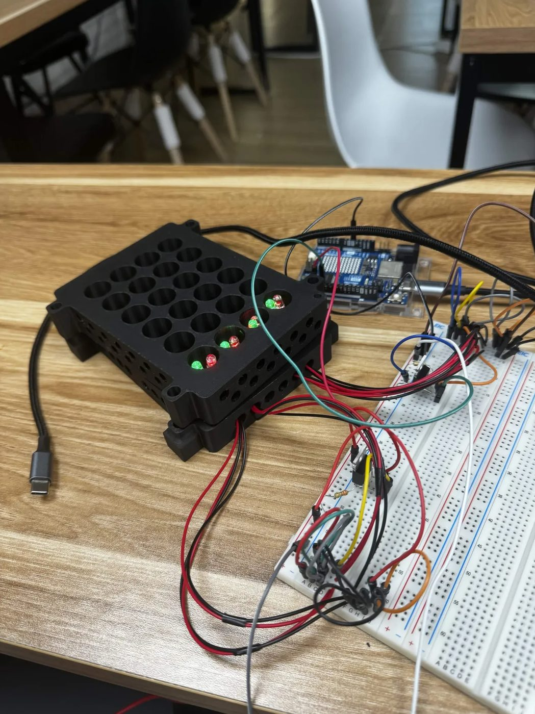
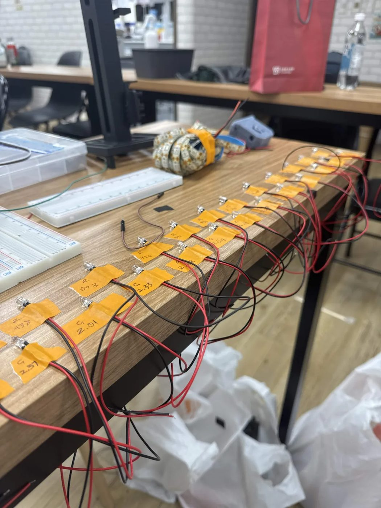
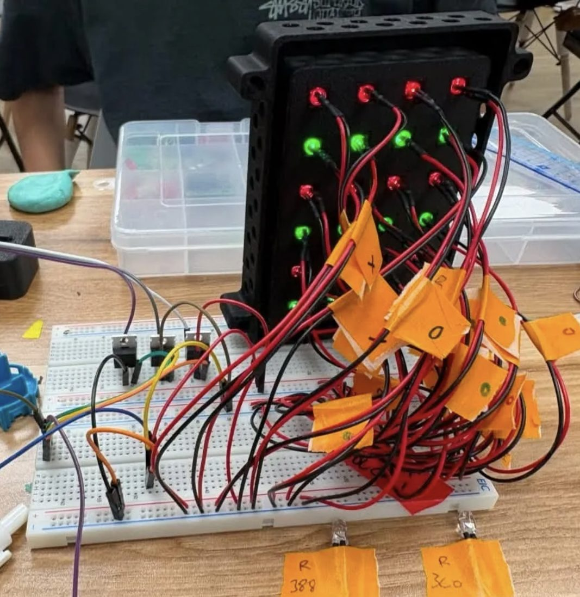
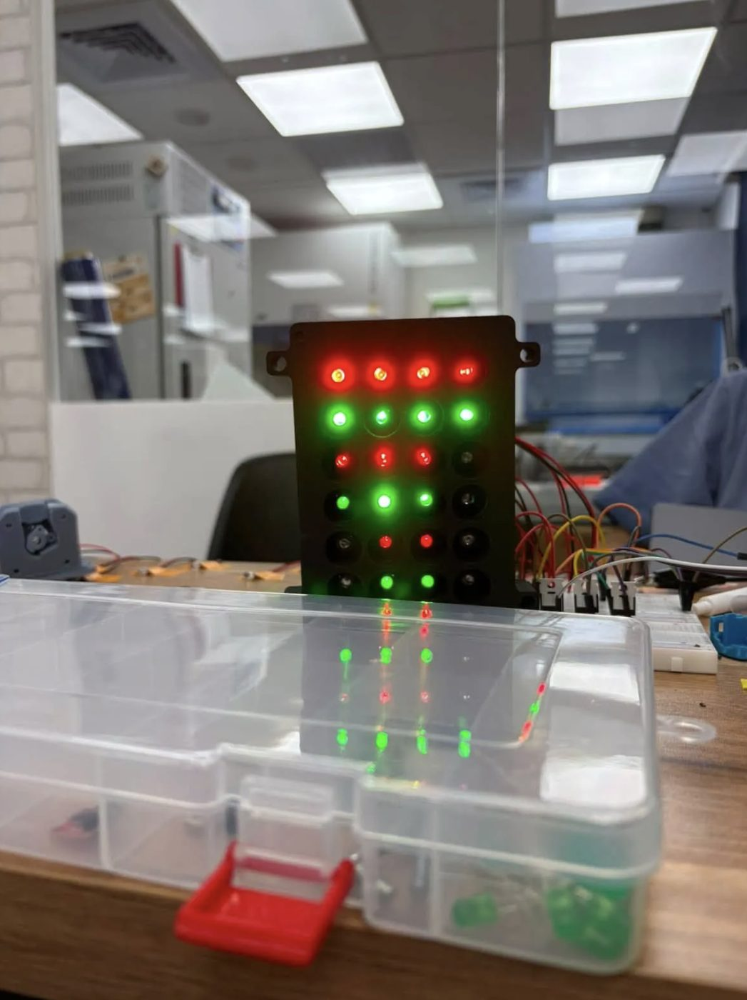
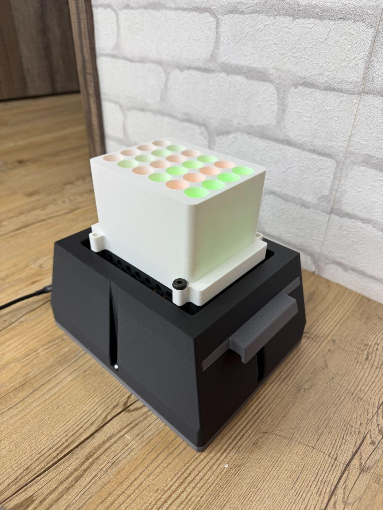

DiOPAL
Dual-wavelength Optogenetic Programmable Array of LEDs — a dedicated testing apparatus, not a component of the bioreactor control loop. It characterizes how light wavelength and intensity affect protectant expression in engineered Bacillus subtilis 168.
The strain carries a CcaS/CcaR light-responsive expression system in which green light induces protectant production and red light halts it. DiOPAL provides a controlled, repeatable way to expose cultures to defined wavelengths and intensities so the effect can be measured directly.
Overview
The array is a 4 × 6 grid organized around two wavelengths and three intensity levels. For each of the three intensity tiers there is a green channel and a red channel, and each channel is formed from four internal-resistance-matched LEDs. This layout allows a single run to compare low, medium and high intensities at both wavelengths simultaneously, under identical external conditions.

Intensity is set by pulse-width modulation from an Arduino through a MOSFET, and each intensity level is held constant throughout a given test. DiOPAL applies a fixed light dose for the duration of an experiment rather than adjusting output dynamically: it is a characterization tool, not a feedback controller.
Materials and Equipment
| Component | Part number / spec | Qty | Unit | Total | Supplier |
|---|---|---|---|---|---|
| Green LED | , peak nm, FWHM nm, Vf V, If mA, viewing angle ° | 12 | |||
| Red LED | , peak nm, FWHM nm, Vf V, If mA, viewing angle ° | 12 | |||
| Microcontroller | Arduino Uno R4 WiFi | 1 | |||
| Perf board | 1 | ||||
| Power supply | , 5 V, A | 1 | |||
| Hook-up wire | AWG | ||||
| Solder | |||||
| Heat-set inserts | , M × mm | ||||
| Screws | , M × mm | ||||
| Filament, PLA | Bambu Lab PLA Basic, 1.75 mm, 1 kg spool | 1 | 355.99 | ||
| Total | TWD | ||||
Printed parts
| Part | Material | Filament | Infill |
|---|---|---|---|
| LPA_Box | Black PLA | g | |
| Bottom_Plate | Grey PLA | g | |
| Tube_Holder | White PLA | g | |
| LED_Holder | Black PLA | g | |
| Left_C | Grey PLA | g | |
| Right_C | Grey PLA | g |
Equipment
Lux meter (model and resolution), 3D printer, soldering iron, calipers, printed sensor fixture.
Iteration History
-
01
Dual LED per column
A dual-LED-per-column layout, allowing quick switching between green and red output to exercise the on/off control of B. subtilis protectant production. Wire-management prints were introduced to keep the growing harness organized.

Iteration 1 Bare stack on the bench — LED holder and tube holder, driven straight from a breadboard. 
Iteration 1 Only a few channels wired; no enclosure and no light shielding yet. Gap. Established the dual-wavelength concept, but did not yet control for output consistency between LEDs or for interference from external light.
-
02
Three calibrated tiers, and a lid
Consistent LED output for each column, with low, medium and high calibration outputs so protectant production could be tested across a range of intensities. Coverage was added to block external light sources.

Iteration 2 All 24 channels wired and lit, with every lead tagged — the measurement pass that produced the matched groups. 
Iteration 2 Columns driven together through MOSFETs on the breadboard. This introduced the three-intensity structure that defines the array, and the shielding needed to make an intensity comparison meaningful — ambient light would otherwise confound the low-intensity conditions.
-
03
A self-contained instrument
As iteration 2, plus:
- an outer frame print housing the wiring and Arduino,
- computer-controlled light-intensity variance, via code,
- slider prints for easy assembly and disassembly, and
- a tall print to house test tubes.
Iteration 3 The finished instrument — enclosed housing, sliders, and the tube holder seated on top. 
Iteration 3 The array under the tube holder, columns alternating green and red. The third iteration turned the array from a bench breadboard into a serviceable instrument: enclosed electronics, software intensity control, tool-free assembly and integrated sample holding.
Drag to compare any two builds in the same frame and at the same scale.
LED Matching & Measurement (I²)
Internal-resistance variance is a common problem in cheap, single-bulb LEDs: nominally identical parts draw different currents and emit different intensities at the same drive level. Left uncorrected, this would make the low/medium/high tiers unreliable and the wavelength comparison unfair.
By individually measuring the output of each LED we identify units with similar — and therefore matching — internal resistance. From the matched units we form three groups of four per wavelength, one group per intensity tier, arranged as columns within the array. Because the LEDs in a column are resistance-matched, their outputs can be recalibrated together through straightforward mathematical adjustment so that all columns of a given tier match one another.
- Green channel
- ~535 nm
- Red channel
- ~670 nm
- LEDs per column
- 4, resistance-matched
- Intensity tiers
- 3 per wavelength
Wavelengths are the classic CcaS/CcaR values, assumed pending measurement.
Measured peak wavelength and FWHM for each channel, exact LED part numbers, and the lumen values used to form the matched groups.
Control and Electronics
Light intensity is controlled by PWM signals generated by the Arduino, each driving a MOSFET that switches the corresponding LED group. Software sets the duty cycle for each intensity tier, and the selected intensities are held constant for the duration of a test so cultures receive a fixed, well-defined dose. Three calibrated tiers, combined with two wavelengths, give six defined light conditions per run.
Software sets a duty cycle per tier
Arduino PWM drives one MOSFET per group
Each MOSFET switches its column of four
Held constant for the whole test
- MOSFET part number
- PWM frequency, and the duty-cycle values used for low / medium / high
- Power supply specification
Specification & Role
Final configuration
Array layout
4 × 6 grid — 2 wavelengths × 3 intensity tiers, 4 matched LEDs per column.
Wavelengths
Green ~535 nm induces protectant expression; red ~670 nm halts it. confirm
Intensity tiers
Low, medium and high — resistance-matched and mathematically recalibrated to match across columns.
Control
Arduino PWM via MOSFET, held constant per test.
Shielding
External-light coverage isolates the culture from ambient light.
Housing
Enclosed frame for wiring and Arduino; slider prints for assembly and disassembly.
Sample holding
Tall print sized to house test tubes.
Overall dimensions, power supply, and per-tier PWM duty-cycle values.
Role in the project
How does the wavelength and intensity of applied light affect protectant development in engineered B. subtilis 168?
DiOPAL exists to answer that specific biological question. By holding defined green and red intensities constant across a run, and shielding cultures from external light, it isolates the light variable so its effect on protectant production can be measured cleanly. The resulting characterization data support the project's protectant-expression work and inform how the CcaS/CcaR switch behaves under different lighting conditions.
Links to the biology, results and measurement pages where DiOPAL data are reported.